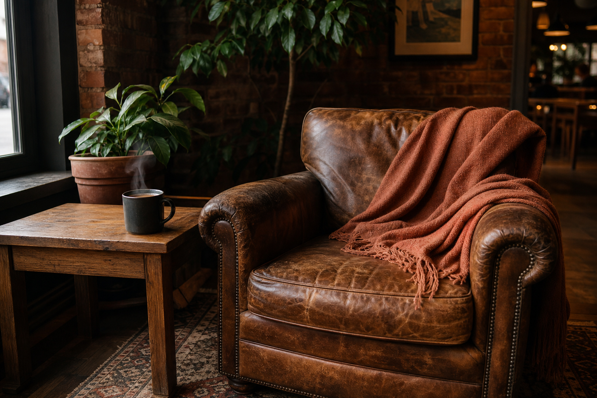

Honesty in the cup
We source responsibly, roast for clarity, and never hide behind sugar or smoke.
Ember & Oak began as a wish for a room that felt like home — oak tables, terracotta cups, and coffee that invites you to stay.
Founders Mara and Eli opened Ember & Oak to bring the comfort of slow mornings into the neighborhood. We roast in small batches, bake before sunrise, and keep the lights soft enough for conversation.
First pop-up cups at the riverside market — borrowed kettle, borrowed courage.
Doors open on Maple Street with twelve chairs and a promise of kindness.
Still neighborhood-first: familiar faces, seasonal menus, and the same terracotta mugs.

We source responsibly, roast for clarity, and never hide behind sugar or smoke.
Your name, your usual, your quiet table — small rituals that make a place feel yours.
Natural materials, reusable habits, and a room that ages warmly with every season.
Stop by for a pour and a pastry — we’re happiest when the room is humming softly.
Get directions